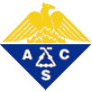

Here is the most recent syllabus for CHEM 1141: Autumn 2022
Old Exams
Please be warned: Beginning fall 2014, the chapters covered for each exam have changed.
Fall 2008 Exams
Exam 1 (Answers) - Chapter 1 & 2
Exam 2 (Answers) - Chapter 3 & 4
Exam 3 (Answers) - Chapters 5 – 7
Exam 4 (Answers) - Chapter 8 – 10
Fall 2012 Exams
Exam 1 Answers - Chapter 1 & 2
Exam 2 Answers - Chapter 3 & 4
Exam 3a Answers - Chapters 5 – 7
Exam 4 Answers - Chapters 8 – 10
Fall 2014 Exams
Exam 1A and answers
Exam 2 Answers.
Exam 3D and answers.
Exam 4A and answers.
Fall 2016 Exams
Exam 1C and answers - Chapters 1 & 2
Fall 2021 Exams
Exam 2A and answers - Chapters 3 & 4
Exam 3B and answers - Chapter 5–7.1
Worksheets
Molarity practice.
Practice Quizzes
Here is a full set of Quizzes and Answers from fall, 2012.
Please note: the quizzes are based on the previous week’s lecture material. It is VERY LIKELY that these quiz numbers will NOT match up with the quizzes we have this year!
Final Exam Information

The final exam in Chem 1141 is an ACS standardized exam, covering material from chapters 1 through 10 of our textbook. The SSU chemistry club sells a study guide for this exam. I’ve prepared some notes on the exam and the grading curve. The study guide contains information for the full year of general chemistry, but you can also use the following resource to see what is specifically covered on the first-term exam. The ACS has some useful tips on taking their standardized exams too.Some exams with a similar format to the ACS final are located on this webpage. Note: they cover more material than the CHEM 1141 final exam.